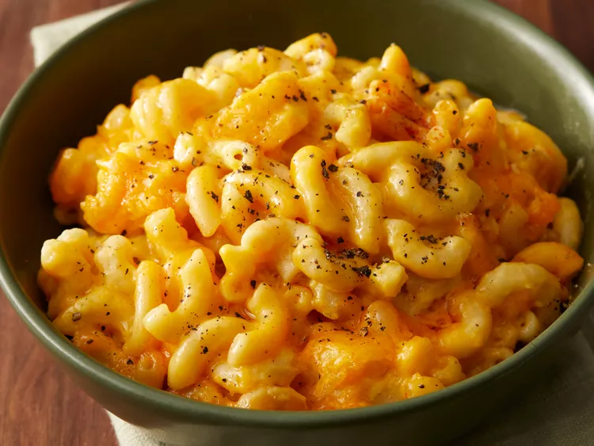

Slow Cooker Mac and Cheese

Description
This crockpot mac and cheese recipe is creamy, comforting, and takes just moments to assemble in a slow cooker.
Great for large family gatherings and to take to potluck dinners. It's always a big hit!
Ingredients
-
1 (16 ounce) package elbow macaroni
-
½ cup butter
-
salt and ground black pepper to taste
-
1 (16 ounce) package shredded Cheddar cheese, divided
-
1 (5 ounce) can evaporated milk
-
2 eggs, well beaten
-
2 cups whole milk
-
1 (10.5 ounce) can condensed Cheddar cheese soup (such as Campbell's®)
-
1 pinch paprika, or as desired (Optional)
Steps
-
Fill a large pot with lightly salted water and bring to a rolling boil. Stir in macaroni and return to a boil.
Cook pasta uncovered, stirring occasionally, until tender yet firm to the bite, about 8 minutes. Drain and
transfer pasta to a slow cooker.
-
Add butter to pasta and stir until melted; season with salt and pepper. Sprinkle about 1/2 of the Cheddar
cheese
over pasta and stir.
-
Whisk evaporated milk and eggs together in a bowl until smooth; stir into pasta mixture.

-
Whisk milk and condensed soup together in a bowl until smooth; stir into pasta mixture.


-
Sprinkle remaining cheese over pasta mixture; garnish with paprika.

-
Cook on Low for 3 hours.
-
Serve hot and enjoy!
Tips
Some slow cookers take less time. Check the edges are not getting too brown after 2 1/2 hours.
To bake in a conventional oven, pour pasta mixture into a casserole dish and bake at 350 degrees F (175 degrees C)
for 45 minutes to 1 hour.
Credit: Cathy P